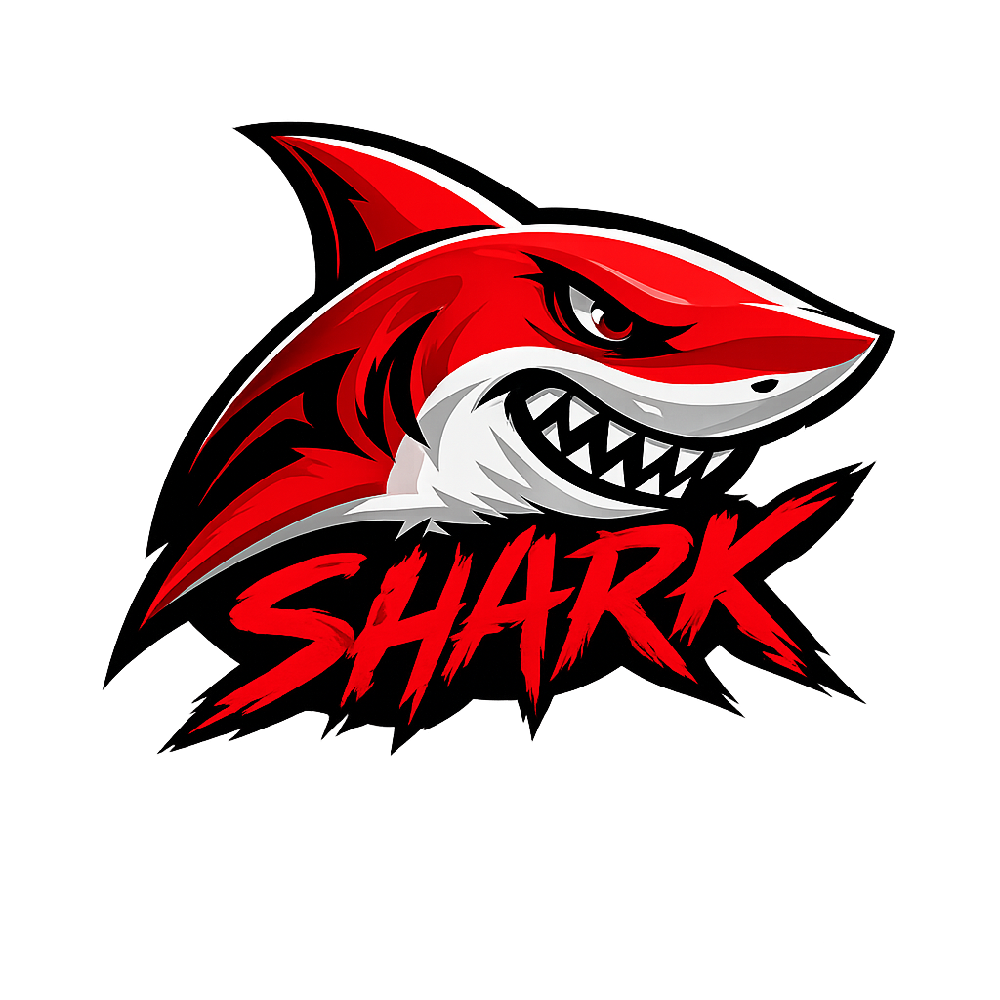

Descreva a mudança que você quer no projeto. O Shark Git usa IA para editar os arquivos e criar o commit direto no GitHub.

Insira a chave de licença para liberar a extensão.
—
Salve um repositório abaixo para começar. Depois você troca de projeto com um clique, sem digitar o token de novo.
Como você quer conectar sua conta do GitHub?
Você autoriza na tela do GitHub. Sem token, sem escopo, sem copiar nada.
Conectado
Repositório salvo.
Ele já aparece em Meus projetos, no topo desta tela.
Carregando seus repositórios...
O GitHub cuida do código. Para consultar ou alterar o banco de dados, escolha por onde conectar.
Use quando seu projeto foi criado no Lovable. Você autoriza sua conta e pronto — não precisa de senha nem token.
Abre o site do Lovable para você autorizar. A autorização vale para a sua conta inteira, então ela fica guardada com segurança no servidor e você pode desconectar quando quiser.
—
Carregando projetos...
Refaz a build e publica a versão atual no ar. Use depois de um commit, quando o preview do Lovable ainda mostrar a versão antiga. Não roda sozinho de propósito: publicar deixa a mudança visível para quem acessa o site.
Use quando você tem acesso ao projeto no Supabase. Aguenta bem mais consultas seguidas que o Lovable.
Como você quer conectar o Supabase?
Você autoriza na tela do Supabase e escolhe a organização. Nada para copiar.
O token fica guardado com segurança no servidor e você pode desconectar quando quiser.
—
Carregando projetos...
Desligado, a extensão recusa DROP, TRUNCATE e alterações que apagam colunas ou desligam a proteção das tabelas. Vale para os dois caminhos. Deixe ligado só enquanto precisar: apagar dados não tem como desfazer.
Cria um resumo da estrutura do projeto para a IA acertar mais nas alterações, principalmente em projetos grandes. Funciona sozinho, sem você precisar fazer nada.
Dois passos, uma vez só. Depois é só pedir as mudanças por mensagem.
Seu projeto na Lovable precisa estar sincronizado com um repositório. Se ainda não estiver, faça isso primeiro.
Tudo acontece em uma tela só: você conecta a conta do GitHub com um clique, escolhe o repositório numa lista, conecta o banco de dados e seleciona o projeto. Não precisa criar token nem digitar nada complicado.
Dúvida na instalação? Fale com o suporte.
Nenhuma pergunta encontrada. Tente outra palavra.
Carregando...
Carregando...
—
—
Descreva a mudança que você quer no projeto. O Shark Git usa IA para editar os arquivos e criar o commit direto no GitHub.